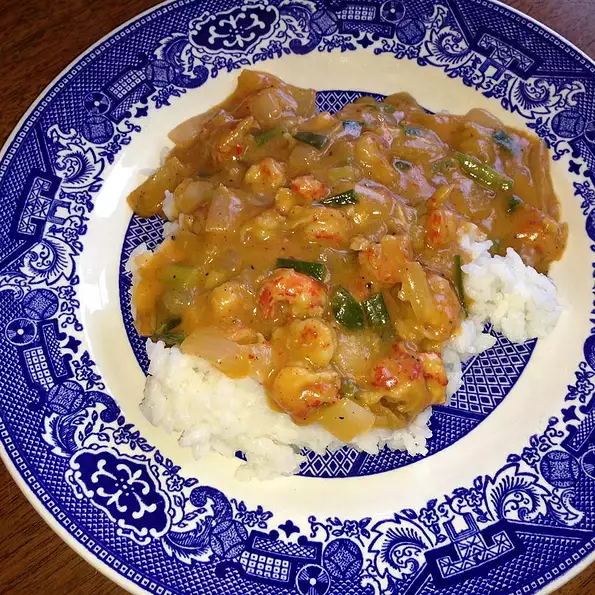

Brenda's Lasagna recipe

Ingredients
- 2 cups long grain white rice
- 4 cups water
- ½ cup margarine
- 1 large onion, chopped/li>
- 1 medium green bell pepper, chopped
- 2 cloves garlic, minced
- 1 (10.75 ounce) can condensed cream of mushroom soup
- ½ cup water, or as needed
- salt and black pepper to taste
- cayenne pepper to taste
- 1 pound peeled crawfish tails
Steps
- Combine the rice and water in a saucepan, and bring to a boil. Cover, and reduce heat to low. Simmer for 15 to 20 minutes, until rice is tender and water has been absorbed.
- While the rice is cooking, melt the margarine in a large skillet over medium heat. Add the onions and bell pepper, and cook and stir until tender, 10 to 15 minutes. Stir in the garlic, and cook for a minute.
- Mix in the cream of mushroom soup and water. Season to taste with salt, pepper and cayenne. Stir in the crawfish tails. Cover, reduce heat to low and simmer for 15 to 20 minutes, stirring occasionally. Water can be added to thin as needed. Serve over rice.